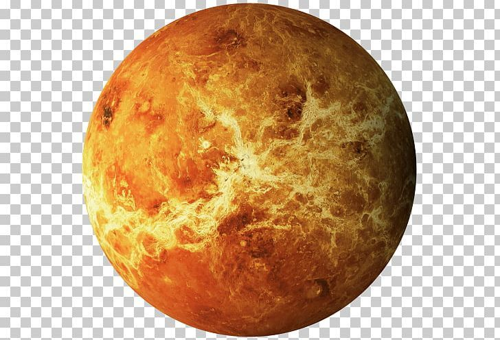

Venus
Venus es el planeta más caliente del sistema solar debido a su densa atmósfera llena de dióxido de carbono que provoca un fuerte efecto invernadero.
Datos importantes
- Distancia al Sol: 108 millones de km
- Duración del año: 225 días
- No tiene lunas
- Gira en dirección contraria a la mayoría de los planetas